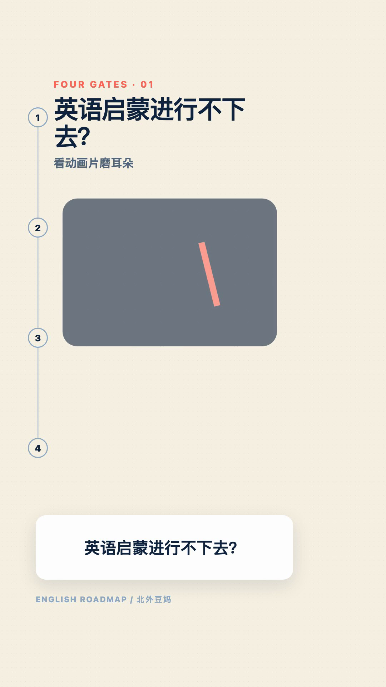
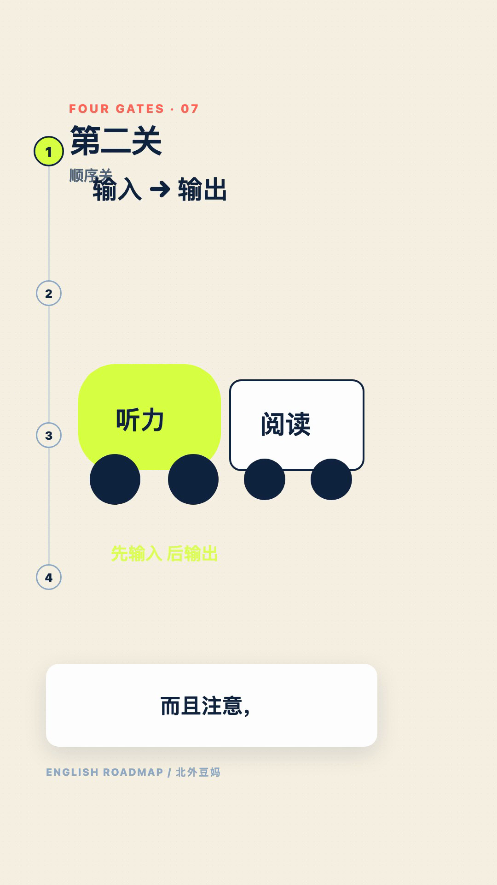
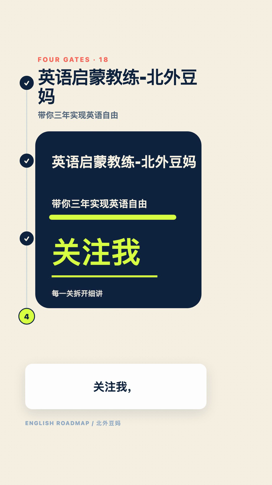

Structured script and local Voicebox narration.
Local-first · Reproducible · Reviewable
TextVideoGen
TextVideoGen is a local video workspace I use through OpenCode. Scripts, voice, storyboards and assets are saved by stage. Browser-rendered animation and FFmpeg produce the video, with individual scenes available for revision.

How it works
OpenCode agents and skills run 13 stages. Voicebox provides speech, WhisperX aligns timing, Playwright renders HTML/SVG scenes and FFmpeg assembles the video. JSON Schemas and logs record stage outputs and help determine which scenes need rebuilding after a change.
Current status
Currently supports macOS Apple Silicon, with a v0.1.0 source release. Production runs through OpenCode; an independent one-click production API is not implemented. The package excludes private projects, models and the runtime. The sample below is an archive.
Production pipeline
GPT handles creative work, direction, revision scope and the final gate; DeepSeek handles collation, metadata and preliminary checks, whose results must be reviewed.
WhisperX alignment, then agent creative treatments.
Direction and storyboards bound to text and assets.
Registered scene assets and per-scene frame rendering.
Single filter-graph assembly and technical QA.
Human review, targeted revision and atomic delivery.
From HTML Motion to video
Browser rendering and an FFmpeg media pipeline combine expressive motion with precise timing; the shared renderer defaults to 30 fps and can switch to 60 fps for fast movement.
Scene Contract
Captions, assets and visual signatures.
Playwright
HTML / SVG scenes become JPEG streams.
FFmpeg
image2pipe avoids thousands of frame files.
Exact Assembly
One filter graph retimes, joins and mixes audio.
Automated QA
Decode, black, freeze, silence and A/V checks.
Archived sample output
An earlier sample, “Four Gates of English Learning”: 1080 × 1920, 30 fps, 18 scenes. Its generated artefacts were cleared during the packaging pass and the project returned to the script stage, so the frames and verification data below are an archived record.


QA evidence (archived): all 18 scenes are present in order; video/audio duration differs by 0.011667 s; no decode errors, black frames or silence over 0.8 s; nine affected scenes were rerendered and nine unchanged scenes were hash-verified.
Getting started and everyday commands
Every entry point lives in bin/, with separate commands for setup, projects, logging, delivery and packaging.
Prepare the environment
./bin/setup installs the runtime, dependencies, browser and models into .videoenv; ./bin/check-environment only inspects, running no model inference.
Create and produce
./bin/new-project my-video "Title" scaffolds a project, then ./bin/opencode-video hands production to the agents.
Log and check
./bin/video-log records stage events, and ./bin/pnpm-video check combines type, isolated-environment and Voicebox checks.
Technology
Local models, browser rendering and media processing in one workspace.
OpenCodeTypeScriptNode.jsPythonpnpmuvVoiceboxWhisperXPlaywrightHTML / SVG MotionFFmpegJSON SchemaH.264 + AACmacOS arm64